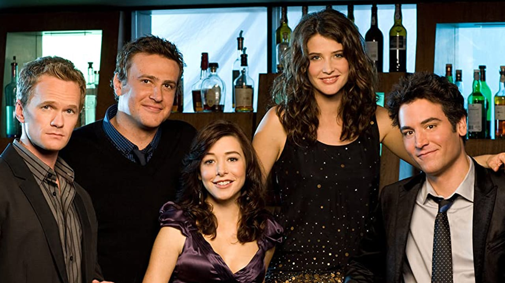

Mert Olgun
Hakkımda
Merhaba.Ben Mert OLGUN! İzmir'de yaşıyorum.Bilgisayar Bilimleri öğrencisiyim.Web geliştirme hayranıyım.Kodluyoruz'un bu eğitimi sayesinde harik şeyler öğrendim ve öğrenmeye devam ediyorum! Siz de katılın!
İlgi Alanlarım
- Film
- Zathura
- Inception
- Star Wars
- Dizi
- How I Met Your Mother
- Not Dead Yet
- Teen Wolf
- Kitap
- 1984
- Dracula
- Sefiller
Sevdiğim Diziler
How I Met Your Mother
Ted Mosby'nin çocuklarına anneleri (kendi eşi) ile nasıl tanıştığını anlatmasıyla başlar. Bob Saget'in seslendirmesiyle asıl karakteri Ted "Size annenizle nasıl tanıştığımı anlatacağım." der ve dizi 2005 yılına döner. Bays ve Thomas dizideki arkadaşlığı kendi arkadaşlıklarından yola çıkarak yazmışlardır. Buna göre Ted karakterinde daha çok Bays öne çıkarken Marshall ve Lily karakterleri ise Thomas ve eşinden esinlenilmiştir.